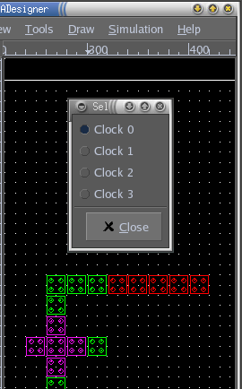
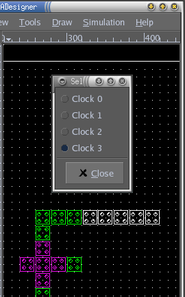

|


QCADesigner Documentation
Clocking
QCADesigner provides several means by which you set the clocking for your designs. However, before you can change the clocking, you must first make a selection. Once you have a selection you can do any of the followings to change the clocking on your selection:To increment (modulo 4) the clock of every cell by one, choose "Tools->Increment Cell Clocks" from the menu, or press Ctrl+I.

To assign a selection of cells to a single clock, use "Tools->Select Clock...". This brings up the clock selection dialog. The appearance of this dialog does not prevent you from continuing to work on your design. Leave it open, and whenever you need to set the clocking for a selection of cells, simply make that selection, and click in the dialog on the clock you wish to assign to your selected cells.
 |
---> |  |
---> |  |
---> |
|  | ---> |  |
If the area of the die you are working on is dominated by cells in a particular clocking zone, you can set the default clock for any subsequent cells you create using the dialog available from "Edit->Cell Properties...". Any new Type 1 or Type 2 cells you create will now be assigned to the selected clock. You can change this assignment using one of the methods discussed above. See the section about Adding Cells.
Top of the page